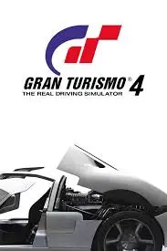
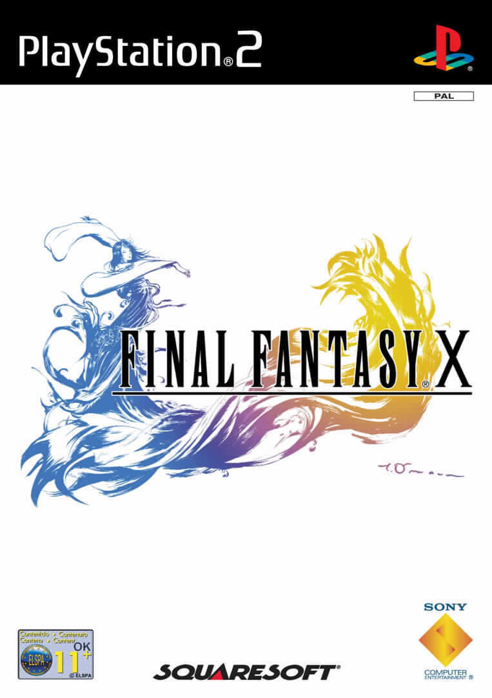

RESPUESTAS
Agustin Ruggeri
(1.1)-ul de "unordered list" -lista no ordenada. crea una lista no ordenada. ejemplo:
<ul>
<li>Esto</li>
<li>Lo otro</li>
<li>Lo de más allá</li>
</ul>
(1.2)-El elemento ol permite definir listas o viñetas ordenadas ("Ordered List"), bien con numeración o
alfabéticamente. ejemplo:
<ol>
<li>punto uno</li>
<li>punto dos</li>
<li>punto tres</li>
</ol>
(1.3)-El elemento HTML <dl> representa una lista descriptiva. El elemento encierra una lista de grupos de
términos (especificados con el uso del elemento <dt>) y de descripciones (proveídas con elementos
<dd>). Algunos usos comunes para este elemento son implementar un glosario o para desplegar metadatos (lista
de pares llave-valor). ejemplo:
<dl>
<dt>Firefox</dt>
<dd>
A free, open source, cross-platform, graphical web browser developed by the
Mozilla Corporation and hundreds of volunteers.
</dd>
(1.4)-El elemento li del ingles item list o elemento de lista declara cada uno de los elementos de una lista.
ejemplo:
<ul>
<li>punto uno
<li>punto dos
<li>punto tres
</ul>
(1.5)
- Argentina
- Brazil
- Paraguay
(1.6)
- lunes
- Martes
- Miercoles
- Jueves
- Viernes
(1.7)
(1.8)
- Pelar y cortar las manzanas en rodajas finas.
- Mezclar la canela, el úcar y la harina en un
tazón.
- Colocar la de masa en un molde para horno.
- Colocar las manzanas sobre la masa de la tarta.
- Hornear la tarta durante 45 minutos.
(1.9)- El atributo que se utiliza en la etiqueta <ol> para mostrar la lista en orden descendente es reversed.
(1.10)
- The glow
- Texas masscre
- Terrifier
- Friday 13th
(1.11)
Juegos mas vendidos de Ps2
-
gta:san andreas
gran turismo 3
Gran turismo 4

Grand theft auto: vice city
Final fantasy X

informacion
original